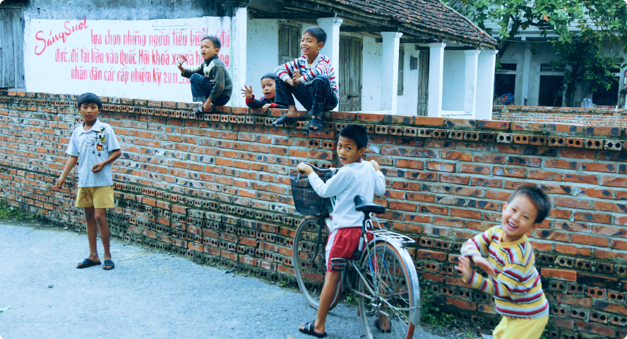
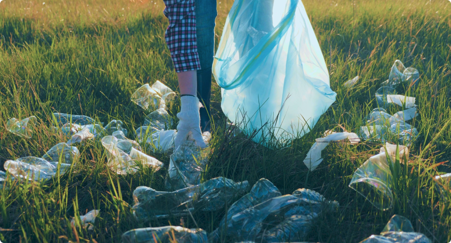

Poverty Alleviation
Program
Emdao Information has been committed to social poverty alleviation and actively practicing corporate social responsibility. We go deep into poverty-stricken areas and help local residents get rid of poverty and become rich through a series of targeted poverty alleviation projects.
Explore More


Charity Public welfare
Adhering to the concept of "taking from society and giving back to society", we actively participate in various charity and public welfare activities and become a disseminator of positive energy in society.
Explore More

Employee Benefits
Yidao Information is well aware that employees are the most valuable assets of an enterprise, so it is committed to providing employees with comprehensive and diverse welfare protection and creating a warm, harmonious and belonging working environment.
Explore More
Corporate Governance
Yidao Information always adheres to high standards and strict requirements in corporate governance, and is committed to building a transparent, fair, efficient and sustainable corporate governance structure.
Explore More